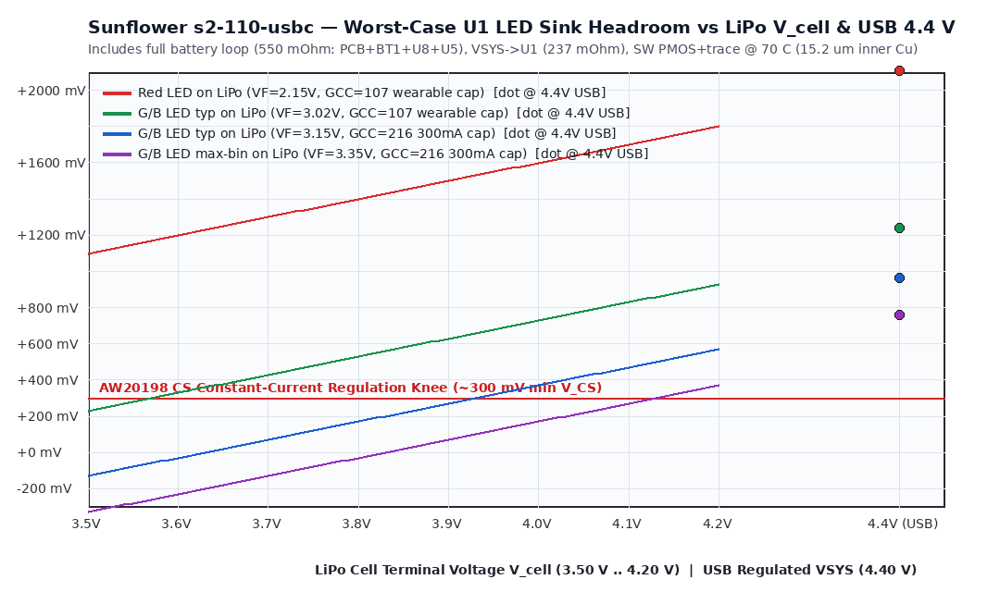
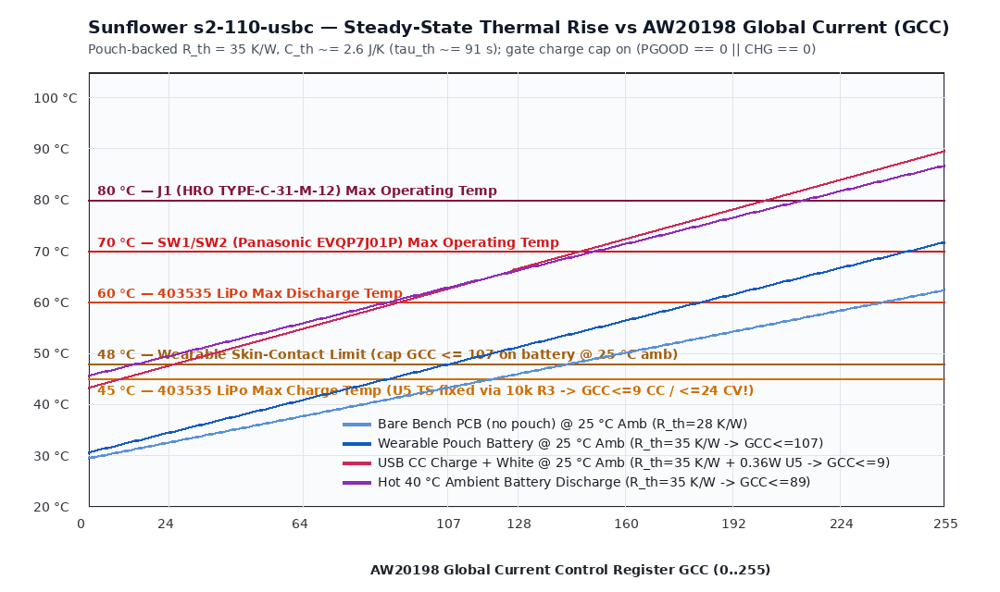

Source: design/sim/sunflower-s2-110-usbc/README.md
s2-110-usbcReproducible post-layout signal-integrity (SI), power-distribution-network (PDN), simultaneous-switching-output (SSO), crosstalk, control-loop stability, and thermal analysis for sunflower.kicad_pcb, generated and verified by sim_audit.py (python3 design/sim/sunflower-s2-110-usbc/sim_audit.py).
Domain (simulation.md) |
s2-110-usbc Circuit / Net |
Trigger Metric on Routed PCB (JLC04161H-7628, t_out = 35 µm, t_in = 15.2 µm) |
Status & Verdict |
|---|---|---|---|
SI — SE_HS (QSPI_*) |
U3 (RP2350A) ↔ U4 (W25Q128JVPIQ) 6 lines (≤ 75 MHz) |
Routed lengths 5.51–13.85 mm (SCLK = 6.66 mm, 2–4 vias), flight time 38–93 ps < t_r / 6 (~250 ps at 1.5 ns edge) → transmission-line reflections are damped, HOWEVER U4.8 VCC decoupling is 8.56 mm (4 vias, ~9 nH) away (C14), causing 312–554 mV 4-bit QSPI read SSO droop |
HOLD (Rev S3D move C22; Rev S3C bench cap to 1x/2x SPI XIP) |
SI — DIFF_HS (USB_*) |
J1 ↔ U7 (USBLC6-2P6) ↔ R14/15 (27 Ω) ↔ U3 (12 Mbit/s FS) |
Routed 34.55 mm (DP, 5 vias, F.Cu+B.Cu) / 35.87 mm (DM, 6 vias, In2.Cu+B.Cu), flight time 233.4 / 259.4 ps (11.6% of l_crit ≈ 308 mm), true dielectric-weighted skew 26.0 ps (1.3% of 2,000 ps FS budget). U7 VCL+ = +31.2 V (@ 30 A 8/20 µs, usblc6-2p6.pdf) + 12–15 nH upstream trace inductance requires 27 Ω R14/15 energy limiting into U3 |
PASS for FS 12 Mbit/s (Rev S3D inline B.Cu routing) |
SI — CLOCK (Y1 12 MHz) |
ABM8-272-T3 (C20625731, CL = 10 pF, ESR ≤ 50 Ω, DL_max = 200 µW), C23 = C24 = 15 pF, R17 = 1 kΩ |
XIN = 8.44 mm, XOUT = 1.33 mm, C24-1 = 1.68 mm (0 vias, B.Cu). Effective load $C_L = \frac{(15+2.5)(15+2.5)}{35} + 1.25 \approx 10.0\text{ pF}$; loop gain margin $g_m / g_{m,\text{crit}} > 10\times$; crystal drive power ~85–125 µW ≤ 200 µW max (abm8-272-t3 rating) |
PASS |
SI — I2C0 (1 MHz Fm+) & I2C1 (400 kHz) |
I2C_SDA/SCL (R21 = R22 = 1.0 kΩ, 89.1 / 86.7 mm, 17 / 15 vias); ACC_SDA/SCL (R20 = R19 = 4.7 kΩ) |
I2C0 bus $C_{\text{bus}} \approx 40\text{ pF}$ (15 pF pins + 8.9 pF copper + 8.5 pF vias + 7.6 pF pads): $t_r(30\text{–}70\%) = 33.9\text{ ns} \le 120\text{ ns}$, $t_{0\to 2.4\text{V}} = 52.0\text{ ns} \implies t_{\text{HIGH}} \approx 448\text{ ns} \ge 260\text{ ns}$ (aw20198qnr.pdf p. 8). I2C1 ($C \approx 14\text{ pF}$, 4.7 kΩ): $t_r \approx 56\text{ ns} \le 300\text{ ns}$ |
PASS |
| PI / DC IR & AC $Z_{\text{PDN}}(f)$ | VBAT/BAT_N, VBUS, VSYS, +3V3, +1V1 |
Exact Dijkstra pad-to-pad @ 70 °C (15.2 µm inner Cu): PCB battery loop 438.0 mΩ (550 mΩ with BT1+U8+U5), VSYS → U1.5 = 236.7 mΩ (4.4× U2.5's 53.7 mΩ), +1V1 U3.39 8.48 mm spoke creates ~1.2 Ω 5.9 MHz anti-resonance, and C17 (CFILT) shares PGND via @(102.43, 99.10) |
HOLD (Rev S3D widen trunks & fix U3 regulator layout; Rev S3C GCC ≤ 107 keeps G/B LEDs regulated down to V_cell ≈ 3.59 V) |
| Crosstalk (Board-Wide Scan) | 4,462 segments across F.Cu, In1.Cu, In2.Cu, B.Cu |
In2.Cu +3V3 (ADC_AVDD) & VSYS cross 0.2104 mm beneath B.Cu VREG_LX/L1 ($M \approx 0.46\text{–}0.73\text{ nH}$, $C_m \approx 6\text{–}33\text{ fF}$ + L1 pad overlap → 19–48 mV_pk 2.5 ns spikes on ADC_AVDD); CS1_15 ↔ VBAT_SENSE (6.79 mm @ 0.115 mm gap) filtered by C7 (100 nF) |
HOLD (Rev S3D move LX cutout to In2.Cu; Rev S3C sample ADC in PFM/blanking or average) |
Control Loops (U3, U5, U6) |
RP2350 1.1 V buck (L1 = 3.3 µH, C18+C19 = 2× 4.7 µF, R13 = 33 Ω + C17 = 4.7 µF); U6 TPS7A0233; U5 BQ24073 |
L1 (AOTA-B201610S3R3-101-T): I_sat = 2.8 A typ / 2.4 A min (aota-b201610.pdf p. 1), DCR = 115 / 140 mΩ; +1V1 total derated C_eff ≈ 5.0 µF (C18 + C19 + 3× 100 nF); R13 = 33 Ω + C17 (~2.4 µF eff) sets VREG_AVDD corner $f_c \approx 2.01\text{ kHz}$; U6 C_out,eff ≈ 3.8–4.7 µF ∈ [0.5, 22] µF (tps7a02.pdf p. 5); U5 C2 = C30 = C40 = 22 µF, VIN-DPM = 4.50 V typ |
HOLD on U3.50 VREG_FB carrying core DVDD current & shared CFILT/PGND via |
Analog Front-Ends (Q2, VBAT_SENSE, LED_SDB) |
Q2 (XYC-PT19C-L1, R43 = 22 kΩ, C70 = 100 nF), VBAT_SENSE (100 kΩ || 100 kΩ + 100 nF) |
Q2 $I_{L(3)} = 20\text{–}45\ \mu\text{A}$ (30 µA typ @ 100 lx, xyc-pt19c-l1.pdf p. 4) saturates 22 kΩ at ~315–705 lx (~440 lx typ); RP2350 GPIO26/GPIO27 ADC pads must set OD = 1, IE = 0, PDE = 0, PUE = 0 (rp2350.pdf p. 1068; ±1 µA pad leakage × 50 kΩ = ±50 mV ADC / ±100 mV VBAT systematic bound); LED_SDB (C35 = 100 nF directly on GPIO6) must be driven cleanly high/low (never tri-stated with IE = 1) |
PASS with mandatory firmware GPIO/ADC config |
Thermal (Ø38 mm Wearable + Pouch) |
110 RGB LEDs + 2× AW20198QNR + U5 BQ24073 + 403535 LiPo (TS fixed via 10 kΩ R3) |
Pouch-backed $R_{\theta,\text{board-amb}} \approx 35\text{ K/W}$, $C_{\text{th}} \approx 2.6\text{ J/K}$ ($\tau_{\text{th}} \approx 91\text{ s}$). At 25 °C amb: 48 °C skin limit requires GCC ≤ 107 on battery (71.7 °C uncapped at GCC = 255, exceeding SW1/2 70 °C rating!); 45 °C LiPo charge limit requires GCC ≤ 9 during CC fast charge (0 at low-bat 3.5 V, ≤ 27 in CV taper) gated on PGOOD == 0 || CHG == 0 + cold-boot ADC4 ΔT throttling |
PASS only under mandatory firmware thermal state machine |

70 °C, t_out = 35 µm, t_in = 15.2 µm)Path (sunflower.kicad_pcb) |
Copper Length (mm) |
Layer Transitions | $R_{70^\circ\text{C}}$ (mΩ) |
Voltage Drop @ Rated Load | Finding |
|---|---|---|---|---|---|
VBUS: J1.A4 → U5.13 |
2.48 |
4 (1 via/hop) |
13.4 |
6.7 mV @ 0.50 A |
Low IR drop (4.50 V VIN-DPM margin > 400 mV), but single-via hops (5 required at 1.5 A peak) |
VBAT: BT1.1 → U5.2 |
44.13 (37.9 mm In2.Cu) |
6 (1 via/hop) |
191.4 |
67.0 mV @ 0.35 A (191 mV @ 1.0 A) |
High 15.2 µm inner-layer resistance |
/Power/BAT_N: BT1.2 → U8.4 |
48.59 (42.2 mm In2.Cu) |
4 (1 via/hop) |
246.6 |
86.3 mV @ 0.35 A (247 mV @ 1.0 A) |
Combined PCB battery loop = 438.0 mΩ (550 mΩ incl. BT1 20 mΩ + U8 42 mΩ + U5 50 mΩ) — shifts 297 mA CC→CV transition early by ~130 mV |
VSYS: U5.10 → U1.5 (PVCC) |
47.57 |
10 (1 via/hop) |
236.7 |
41.9 mV @ 177 mA |
4.4× higher than U5.10 → U2.5 (53.7 mΩ, 11.99 mm) |
VSYS: U5.10 → U6.4 (3V3 LDO) |
25.66 |
6 |
153.1 |
23.0 mV @ 150 mA |
Leaves > 170 mV over U6 dropout (130 mV max @ 150 mA) down to VSYS = 3.50 V |
+3V3: C14.1 → U4.8 (nearest Flash cap) |
8.56 |
4 |
47.7 |
— (L_loop ≈ 9.0 nH) |
Causes 312–554 mV 4-bit QSPI SSO droop (§3.1) |
+1V1: C18.1 → U3.50 (VREG_FB) |
1.34 |
0 |
4.0 |
Carries 100% of core DVDD |
Destroys Kelvin sensing (Gate 7 B1) |
+1V1: C18.1 → U3.39 (DVDD East) |
8.48 (In2.Cu spoke) |
2 |
47.0 |
4.7 mV DC (L ≈ 7.5 nH) |
Parallel anti-resonance with 100 nF C21 at f ≈ 5.9 MHz (|Z_peak| ≈ 1.2 Ω, ΔV ≈ 45 mV on 50 mA core step) |
pdn_headroom.png): Under the wearable thermal cap GCC = 107 (5.59 mA peak/die, 83.9 mA SW slot, 197 mA battery total), typical Green/Blue LEDs ($V_F \approx 3.02\text{ V}$) maintain $V_{\text{CS}} \ge 300\text{ mV}$ constant-current regulation all the way down to V_cell ≈ 3.59 V (only gently dimming by ~15% in the final 3.59 → 3.50 V tail before software cutoff), while Red LEDs stay +1,100 mV above dropout and USB 4.40 V operation provides +760 to +1,240 mV of CS headroom across all LED bins.U4 (W25Q128JVPIQ) 4-Bit Quad-SPI Read SSO Supply Droop (Gate 8 B2)U4 (W25Q128JVPIQ) drives QSPI_SD0..3 (U3 only drives SCLK). Because C22 (100 nF) was placed 5.51 mm away on a separate branch, U4.8's nearest decoupling capacitor is C14 (8.56 mm track + 4 vias, L_loop ≈ 9.0 nH including return). Slewing 4 × 7 pF = 28 pF across 3.30 V draws $Q = 92.4\text{ pC}$ in $t_r \approx 1.5\text{–}2.0\text{ ns}$, producing an inductive supply droop on U4.8:0xEB, 1.5 ns fast edge): $\Delta V \approx \mathbf{554\text{ mV}}$ ($V_{CC,\min} \approx 2.75\text{ V}$, straddling W25Q128JV's 2.70 V VCC_min reset/read-glitch threshold once 47 mΩ DC + ripple is included).0xEB, W25Q128JV factory default SR3.DRV = 25%, ~2.0 ns): $\Delta V \approx \mathbf{312\text{ mV}}$ ($V_{CC,\min} \approx 2.99\text{ V}$).0xBB, 25% DRV) / 1-bit Fast-Read (0x0B, 25% DRV): $Q = 46.2 / 23.1\text{ pC} \implies \Delta V \approx \mathbf{156\text{ mV} / 78\text{ mV}}$ ($V_{CC,\min} \ge 3.14\text{ V}$ — completely safe for Rev S3C bench bring-up; Rev S3D moves C22 within ≤ 1.5 mm of U4.8).CFILT (C17) Shared-Via High-Pass Ground Bounce & VREG_LX Mutual Inductance (Gate 8 B3)CFILT high-pass ground-bounce injection: C17 (4.7 µF 0402, ESL ≈ 0.5 nH) ties VREG_AVDD directly to the exact same single 0.15 mm GND via @(102.43, 99.10) (L_via ≈ 0.9 nH) used by Zone 1 (VREG_PGND + C16 CIN + C18 COUT). Above ~10 MHz, 33 Ω R13 is high-impedance compared to C17's 0.5 nH ESL, so C17 forms a low-impedance bridge from the bouncing PGND via straight onto U3.46 (VREG_AVDD), coupling ~30 mV HF switching bounce (~1.18× near C17 resonance).VREG_LX → In2.Cu +3V3 (ADC_AVDD) & VSYS coupling: Across the h = 0.2104 mm 7628 prepreg, B.Cu Zone 5 (VREG_LX) + L1.2 overlap In2.Cu +3V3 (0.09 mm pour + ~0.9 mm parallel run feeding Piece 2 U3.44 ADC_AVDD, $C_m \approx 6\text{–}45\text{ fF}$, $M \approx 0.46\text{–}0.73\text{ nH}$) and VSYS (0.49 mm pour + 0.25 mm L1 body, $C_m \approx 33\text{–}195\text{ fF}$). During RP2350 buck edges ($dV/dt \approx 1.3\text{ V/ns}$, $dI/dt \approx 40\text{–}65\text{ mA/ns}$), $V_{\text{noise}} = M \frac{dI}{dt} + Z_v C_m \frac{dV}{dt} \approx \mathbf{19\text{–}48\text{ mV}_{\text{pk}}}$ (~2.5 ns spikes = 8–20 LSB on the 12-bit SAR ADC when Piece 2 lacks a local B.Cu cap). Bench mitigation (Rev S3C): sample ADC0/ADC1/ADC4 with 16× averaging or during light-load PFM sleep; hardware fix (Rev S3D): move LX cutout to In2.Cu and restore solid +3V3 band around U3.44.sim_audit.py §3)| Layer Pair | Aggressor (dV/dt / dI/dt) |
Victim Net | Parallel Run (mm) |
Gap / Offset (mm) |
Coupled Noise & Assessment |
|---|---|---|---|---|---|
B.Cu ↔ In2.Cu |
/MCU/VREG_LX + L1 |
+3V3 (U3.44 ADC_AVDD) & VSYS |
0.49–0.90 |
h = 0.210 (0.00 offset) |
19–48 mV_pk (2.5 ns) — FAIL (Rev S3D In2.Cu cutout) |
In2.Cu (co-planar) |
CS1_15 (13.3 mA PWM sink) |
VBAT_SENSE (50 kΩ DC, C7 = 100 nF @ ADC0) |
6.79 |
0.115 |
$C_m \approx 0.27\text{ pF}$ into C7 = 100 nF capacitive divider $\implies \Delta V = 3.5\text{ V} \cdot \frac{0.27\text{ pF}}{100\text{ nF}} < \mathbf{0.01\text{ mV}}$ (PASS) |
B.Cu ↔ In2.Cu & In2.Cu |
SW1_5, SW2_6..8 (200 mA scan) |
I2C_SDA, I2C_SCL (1.0 kΩ pull-up, 40 pF) |
8.44–9.92 |
0.003–0.228 |
$C_m \approx 0.6\text{ pF}$, $M \approx 1.8\text{ nH}$ at ~50 ns AW20198 slew $\implies \Delta V < \mathbf{85\text{ mV}}$ vs 990 mV CMOS noise margin (PASS) |
In2.Cu ↔ B.Cu |
SW2_3, CS1_15 |
+1V1 (U3.39 In2.Cu spoke) |
1.90–5.29 |
0.003–0.008 |
< 12 mV into C21 = 100 nF (< 1.1% of 1.1 V, PASS; Rev S3D moves GND to In2.Cu) |
thermal_rise.png)
Ø38.0 mm disc ($A = 22.68\text{ cm}^2$). Bare bench PCB in free air has $R_{\theta} \approx 28\text{ K/W}$, whereas bonding the rear 403535 LiPo pouch blocks rear natural convection ($R_{\theta} \approx 35\text{ K/W}$) and couples board heat directly into the pouch cell ($C_{\text{th}} \approx 1.4\text{ J/K}{\text{PCB}} + 1.2\text{ J/K}{\text{pouch}} \approx 2.6\text{ J/K} \implies \tau_{\text{th}} \approx \mathbf{91\text{ s}}$).Rev S3C Firmware Thermal & Charging Rules:
1. Wearable Battery Discharge Cap (25 °C ambient, 35 K/W): Including 0.16 W MCU baseline, cap continuous full-white GCC ≤ 105 (T_steady ≈ 47.7 °C ≤ 48 °C skin-contact limit; uncapped GCC = 255 reaches 71.7 °C, exceeding SW1/SW2's 70 °C rating and the LiPo's 60 °C discharge limit).
2. USB Charging Cap (45 °C LiPo max charge limit — U5 TS is fixed by 10 kΩ R3!): Gate charging mode on (PGOOD == 0) || (CHG == 0) (because BQ24073 CHG goes High-Z after initial termination even during recharge/top-off!). While PGOOD == 0, cap GCC ≤ 9 during CC fast charge (0.36–0.45 W U5 dissipation; GCC = 0 or status-blink-only single-LED indicator recommended while charging) and GCC ≤ 24 during CV taper (0.27 W).
3. Cold-Boot Relative ADC4 (ΔT_mcu) Throttling: Because RP2350 internal temperature sensor ADC4 has uncalibrated offset (±3–5 °C), sample T_boot within 100 ms of cold boot (<< 91 s $\tau_{\text{th}}$) and throttle GCC whenever ΔT_mcu > +15 °C (or absolute T_mcu > 42 °C while PGOOD == 0, > 52 °C on battery).